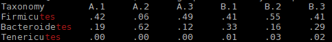

Tutorial
Analyzing OTU table
Data
Here is a mock OTU table from 16S rRNA sequencing result. Columns are sample IDs in format of "GROUP.ID"
$ cat otu_table.csv
Taxonomy,A.1,A.2,A.3,B.1,B.2,B.3,C.1,C.2
Proteobacteria,.13,.29,.13,.16,.13,.22,.30,.23
Firmicutes,.42,.06,.49,.41,.55,.41,.32,.38
Bacteroidetes,.19,.62,.12,.33,.16,.29,.34,.35
Deferribacteres,.17,.00,.24,.01,.01,.01,.01,.01
What a mess! Let's make it prettier!
$ csvtk pretty otu_table.csv
Taxonomy A.1 A.2 A.3 B.1 B.2 B.3 C.1 C.2
Proteobacteria .13 .29 .13 .16 .13 .22 .30 .23
Firmicutes .42 .06 .49 .41 .55 .41 .32 .38
Bacteroidetes .19 .62 .12 .33 .16 .29 .34 .35
Deferribacteres .17 .00 .24 .01 .01 .01 .01 .01
Steps
-
Counting
$ csvtk stat otu_table.csv file num_cols num_rows otu_table.csv 9 4 -
Column names
$ csvtk headers otu_table.csv # otu_table.csv 1 Taxonomy 2 A.1 3 A.2 4 A.3 5 B.1 6 B.2 7 B.3 8 C.1 9 C.2 -
Convert to tab-delimited table
$ csvtk csv2tab otu_table.csv Taxonomy A.1 A.2 A.3 B.1 B.2 B.3 C.1 C.2 Proteobacteria .13 .29 .13 .16 .13 .22 .30 .23 Firmicutes .42 .06 .49 .41 .55 .41 .32 .38 Bacteroidetes .19 .62 .12 .33 .16 .29 .34 .35 Deferribacteres .17 .00 .24 .01 .01 .01 .01 .01 -
Extract data of group A and B and save to file
-o otu_table.gAB.csv$ csvtk cut -F -f "Taxonomy,A.*,B.*" otu_table.csv -o otu_table.gAB.csv $ csvtk pretty otu_table.gAB.csv Taxonomy A.1 A.2 A.3 B.1 B.2 B.3 Proteobacteria .13 .29 .13 .16 .13 .22 Firmicutes .42 .06 .49 .41 .55 .41 Bacteroidetes .19 .62 .12 .33 .16 .29 Deferribacteres .17 .00 .24 .01 .01 .01 -
Search some rows by fields. Matched parts will be highlighted as red
$ csvtk grep -f Taxonomy -r -p "tes" otu_table.gAB.csv -TResult:

-
Transpose
$ csvtk transpose otu_table.gAB.csv -o otu_table.gAB.t.csv $ csvtk pretty otu_table.gAB.t.csv Taxonomy Proteobacteria Firmicutes Bacteroidetes Deferribacteres A.1 .13 .42 .19 .17 A.2 .29 .06 .62 .00 A.3 .13 .49 .12 .24 B.1 .16 .41 .33 .01 B.2 .13 .55 .16 .01 B.3 .22 .41 .29 .01 -
Rename name of the first column
$ csvtk rename -f 1 -n "sample" otu_table.gAB.t.csv -o otu_table.gAB.t.r.csv $ csvtk pretty otu_table.gAB.t.r.csv sample Proteobacteria Firmicutes Bacteroidetes Deferribacteres A.1 .13 .42 .19 .17 A.2 .29 .06 .62 .00 A.3 .13 .49 .12 .24 B.1 .16 .41 .33 .01 B.2 .13 .55 .16 .01 B.3 .22 .41 .29 .01 -
Add group column
$ csvtk mutate -p "(.+?)\." -n group otu_table.gAB.t.r.csv -o otu_table2.csv $ csvtk pretty otu_table2.csv sample Proteobacteria Firmicutes Bacteroidetes Deferribacteres group A.1 .13 .42 .19 .17 A A.2 .29 .06 .62 .00 A A.3 .13 .49 .12 .24 A B.1 .16 .41 .33 .01 B B.2 .13 .55 .16 .01 B B.3 .22 .41 .29 .01 B -
Rename groups:
$ csvtk replace -f group -p "A" -r "Ctrl" otu_table2.csv | csvtk replace -f group -p "B" -r "Treatment" > otu_table3.csv $ csvtk pretty -s " " otu_table3.csv sample Proteobacteria Firmicutes Bacteroidetes Deferribacteres group A.1 .13 .42 .19 .17 Ctrl A.2 .29 .06 .62 .00 Ctrl A.3 .13 .49 .12 .24 Ctrl B.1 .16 .41 .33 .01 Treatment B.2 .13 .55 .16 .01 Treatment B.3 .22 .41 .29 .01 Treatment -
Statistics of digital data
$ csvtk stat2 -f 2-5 otu_table3.csv field num sum min max mean stdev Proteobacteria 6 1.06 0.13 0.29 0.18 0.07 Firmicutes 6 2.34 0.06 0.55 0.39 0.17 Bacteroidetes 6 1.71 0.12 0.62 0.28 0.18 Deferribacteres 6 0.44 0 0.24 0.07 0.1Please don't be supprised at the
sum, it's a mock otu table... -
Sort by abundance of Proteobacteria in descending order.
$ csvtk sort -k Proteobacteria:nr otu_table3.csv | csvtk pretty -s " " sample Proteobacteria Firmicutes Bacteroidetes Deferribacteres group A.2 .29 .06 .62 .00 Ctrl B.3 .22 .41 .29 .01 Treatment B.1 .16 .41 .33 .01 Treatment B.2 .13 .55 .16 .01 Treatment A.3 .13 .49 .12 .24 Ctrl A.1 .13 .42 .19 .17 Ctrl -
Sort by abundance of Proteobacteria in descending order and Firmicutes in ascending order
$ csvtk sort -k Proteobacteria:nr -k Firmicutes:n otu_table3.csv | csvtk pretty -s " " sample Proteobacteria Firmicutes Bacteroidetes Deferribacteres group A.2 .29 .06 .62 .00 Ctrl B.3 .22 .41 .29 .01 Treatment B.1 .16 .41 .33 .01 Treatment A.1 .13 .42 .19 .17 Ctrl A.3 .13 .49 .12 .24 Ctrl B.2 .13 .55 .16 .01 Treatment -
Filter samples with abundance greater than 0 in all taxons (columns except for sample and group, you can also use
-f "2-5>0").$ cat otu_table3.csv | csvtk filter -f "2-5>0" | csvtk pretty -s " " sample Proteobacteria Firmicutes Bacteroidetes Deferribacteres group A.1 .13 .42 .19 .17 Ctrl A.3 .13 .49 .12 .24 Ctrl B.1 .16 .41 .33 .01 Treatment B.2 .13 .55 .16 .01 Treatment B.3 .22 .41 .29 .01 Treatment -
Most of the time, we may want to remove samples with abundance of 0 in all taxons.
$ cat otu_table3.csv | csvtk filter -f "2-5>0" --any | csvtk pretty -s " " sample Proteobacteria Firmicutes Bacteroidetes Deferribacteres group A.1 .13 .42 .19 .17 Ctrl A.2 .29 .06 .62 .00 Ctrl A.3 .13 .49 .12 .24 Ctrl B.1 .16 .41 .33 .01 Treatment B.2 .13 .55 .16 .01 Treatment B.3 .22 .41 .29 .01 Treatment